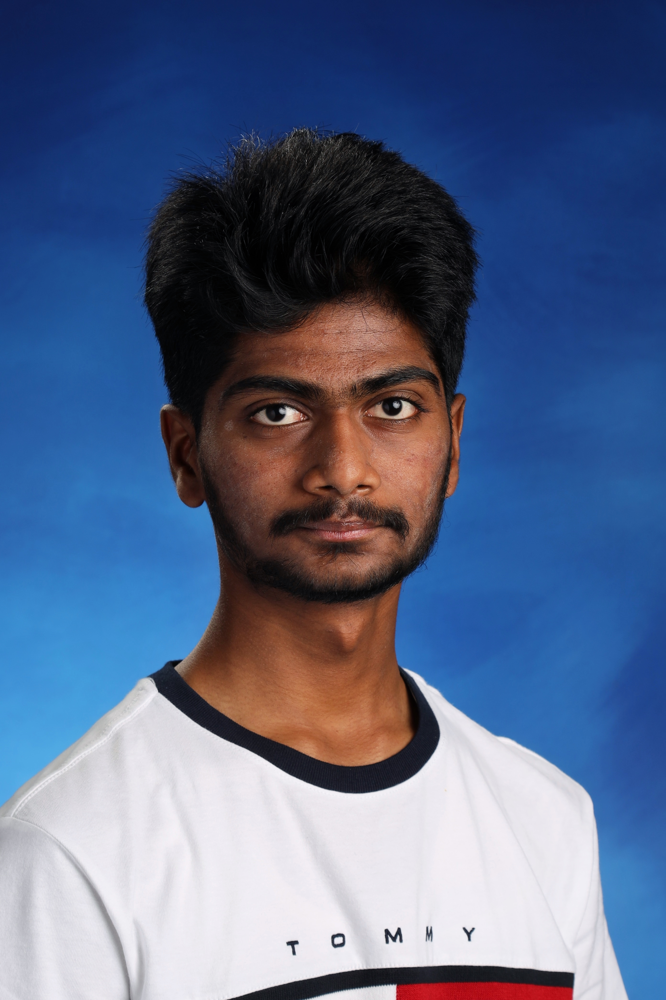

Venkata Adapala

Summary
I am a freshman at
University of Toronto, Mississauga
. I am interested in various programming-related fields like:
Game Development
Web Development
Robotics Programming
Education
I graduated from high school at
Garth Webb Secondary School
in 2023.
Awards and Certifications
Ontario Scholar
Graduated from high school as an
Ontario Scholar
Programming Experience
Control Systems Sub-team - FIRST Robotics Competition
October 2022 - June 2023
Was a control-systems programmer on
FRC Team 5409
Implemented functionalities on the robots such as:
Visual target detection using advanced cameras
Automatic target-based alignment
Projects
"Whirlybird" - A Fun Casual Game
A Python-based recreation of the similarly named game on Google Play
The game objective is to jump as high as possible while avoiding obstacles
Link to the GitHub Repository
Wordle
A Java-based recreation of the famous Wordle game.
The objective is to guess the 5-letter word with every guess acting as a clue.
Link to the GitHub Repository
Other Experience
Volunteer - West Oak Village
June 2022 - September 2022
Volunteered as a gardener for
West Oak Village
, a long term care home
Took care of huge lawns by weeding, watering and planting and setting up garden equipment
Volunteer - Halton Multicultural Council
July 2022 - August 2022
Volunteered in various events such as the
Multiculturalism Day
Links
GitHub